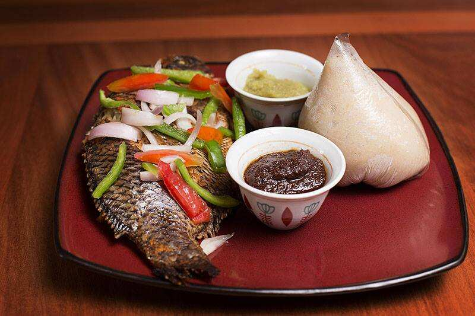

Banku with tilapia

Banku and Tilapia - A stable food in Ghana
Banku and Tilapia is a traditional Ghanaian dish that is very common
amongst all regions in Ghana. Banku is basically a mixture of corn dough/flour
mixed with cassava dough/flour. It can be eaten with various sauces
such as stew, hot pepper sauce, soup etc. Tilapia is a freshwater fish that is a
delicacy in Ghana. It can be used for stew, soups and also eaten by grilling,
baking and frying. Enjoy!!!
Ingredients - Banku
- ½ pack of Corn Mix /dough
- ½ pack of Cassava flour/dough
- 2 cups of Water
- 1 tbsp. of Salt
Ingredients - Tilapia
- 2 tsp of Ginger
- ½ clove of Garlic
- ½ of a full Onion
- 1 tsp of Salt
- 2 big sized Maggie cube
- Seasoning salt of choice
Ingredients - Pepper
- 1 Tomato
- 2-3 Fresh habanero Peppers
- ½ of a full Onion
- ½ tsp of Salt
- Oil (optional)
- 1 small Maggie cube
Procedure for banku
- Mix equal amounts of cassava and corn dough in a pan
- Add water to the mixture and stir till it looks porridge like
- Add salt to the mixture and put it on fire
- Stir the mixture with a wooden ladle
- As mixture begins to thicken, continue to stir till it becomes a thick pulp
- Continue to stir until color of the mixture changes to a light cream color
- This indicates that the banku is ready and it can be molded with a small bowl into balls
Procedure for Hot pepper
- Depending on how spicy you want it, the amount of tomatoes, pepper and onions could vary
- Chop fresh habanero peppers, about two or three and about half of an onion into a blender with a pinch
of salt and a Maggie cube or half a cube
- Blend the mixture into large chunks and then chop some tomatoes into the blender. Blend the whole mixture together.
Procedure for Tilapia
- Start of by cleaning the fish, getting rid of scales, the stomach and also removing the fins. These steps are optional as
some people just go ahead and season the fish without cleaning it
- Blend about ½ onion, ½ of garlic and 2 tablespoons of ginger with about a teaspoon of oil, 2 Maggie cubes and salt
(these type of seasoning are optional. Other kinds can be used).
- Depending how many fish you are making, you may have to add more or less of the onion, garlic and ginger
- Season the fish with the mixture and bake at preferably medium heat to prevent the fish from burning.
- Tilapia does not take very long to cook. The median time is about 20-30 minutes when baking.